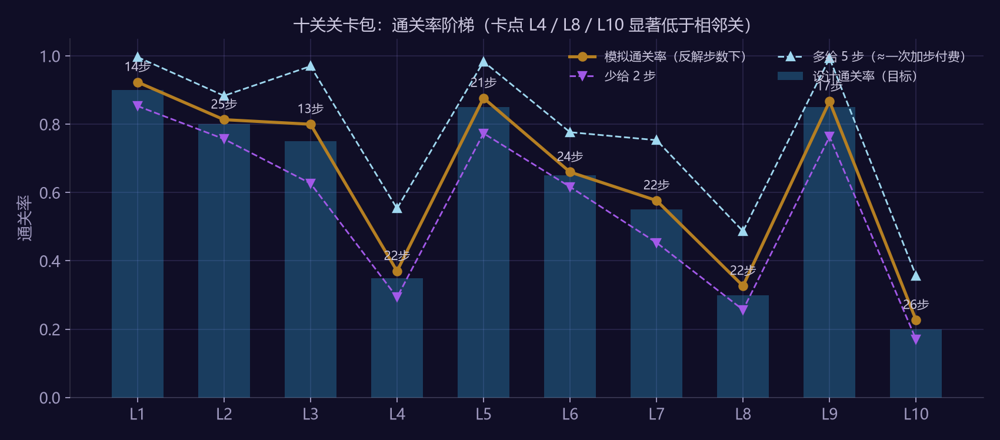

1. 文档信息
| 项 | 内容 |
|---|---|
| 项目 | 假想三消产品（品类同开心消消乐 / Candy Crush Saga；不使用任何品牌资产） |
| 系统 | 一个中期章节的 10 关关卡包（含一种新障碍与一种新棋盘形态的首次引入） |
| 版本 | v1.1（2026-09，经审核修订：每关 1,000 局、加随机策略下限与安全余量） |
| 作者 | 赵鹏淦（关卡 / 系统策划） |
| 状态 | 设计完成，步数经模拟器反解并验证（每关 1,000 局，95% 置信区间 ±0.02–0.03） |
| 依据 | 《三消关卡步数预算与难度曲线拆解案》§8 五条设计规则；验证脚本 analysis/m3_level_pack.py，对照变体 m3_level_pack_variants.py，模拟器 match3_sim.py |
2. 设计目标
一句话：让玩家在 10 关里经历"学会一件新事 → 被它难住两次 → 带着它离开"，且每一关的步数都是算出来的。
| 目标 | 落地约束 |
|---|---|
| 步数不拍脑袋 | 先定每关的目标通关率，再由机器人在真实棋盘上反解步数（§5） |
| 节奏按位置排 | 第 4 / 8 / 10 关为峰，峰后一关回落（沿用拆解案 §2 的"每 5 关一峰"，压缩到 10 关，取舍见 §3） |
| 新鲜感与难度分开排 | 本章引入一种新障碍（本产品此前未出现的可化解障碍，文中代号"糖霜"）和一种新棋盘形态（异形 / 切割），新元素首次出现只在低难度关 |
| 付费点明确 | 三个峰关是加步付费点；喘息关不设付费诱因 |
| 每关只有一个"为什么" | 每关的设计意图一句话能说清，说不清的关删掉 |
定位与目标玩家：产品中期章节（对应拆解案 §4 里 201–500 关区间、每 100 关 21–30 个卡点的密度——本章 10 关 3 个卡点与之相当；早期章节不应这样排）。玩家已熟悉三消基本操作与三种特效糖，已见过 3–4 种障碍。
3. 章节节奏总表
| 关 | 名称 | 类型 | 目标量 | 颜色 | 障碍 | 棋盘 | 反解步数 | 上线步数 | 设计通关率 | 模拟通关率 | 角色 |
|---|---|---|---|---|---|---|---|---|---|---|---|
| 1 | 灯塔初醒 | 果冻 | 30 层 | 5 | 无 | 满盘 | 14 | 16 | 0.90 | 0.93 | 教学 |
| 2 | 潮间带 | 果冻 | 36 层 | 6 | 无 | 满盘 | 25 | 27 | 0.80 | 0.82 | 巩固 |
| 3 | 冻住的礁石 | 果冻 | 25 层 | 5 | 糖霜×24（1 层） | 满盘 | 12 | 14 | 0.75 | 0.76 | 新元素 |
| 4 | 双潮汇 | 果冻 | 24 层 | 6 | 糖霜×5（竖墙） | 满盘 | 22 | 22 | 0.35 | 0.38 | 卡点·付费 |
| 5 | 拾贝 | 收集 | 60 个蓝 | 5 | 无 | 满盘 | 21 | 23 | 0.85 | 0.85 | 喘息 |
| 6 | 漏斗湾 | 配料 | 3 个 | 5 | 无 | 漏斗形（65 格） | 24 | 26 | 0.65 | 0.67 | 组合·新棋盘 |
| 7 | 冰点星图 | 果冻 | 39 层 | 6 | 糖霜×10（散点） | 满盘 | 22 | 24 | 0.55 | 0.56 | 组合 |
| 8 | 断桥 | 果冻 | 32 层 | 6 | 糖霜×1（桥心） | H 形（75 格） | 21 | 21 | 0.30 | 0.31 | 卡点·付费 |
| 9 | 退潮 | 收集 | 45 个绿 | 5 | 无 | 满盘 | 17 | 19 | 0.85 | 0.88 | 喘息 |
| 10 | 灯塔之夜 | 果冻 | 40 层 | 6 | 糖霜×17（十字） | 满盘四分 | 26 | 26 | 0.20 | 0.22 | 章末·付费 |
步数敏感度（反解步数下，贪心机器人 1,000 局；随机策略 333 局）：
| 关 | 少给 2 步 | 反解步数 | 多给 5 步（≈一次加步付费） | 随机乱点 | 松紧系数 |
|---|---|---|---|---|---|
| 1 | 0.85 | 0.93 | 0.99 | 0.03 | 1.56 |
| 2 | 0.78 | 0.82 | 0.90 | 0.02 | 1.47 |
| 3 | 0.55 | 0.76 | 0.96 | 0.03 | 1.20 |
| 4 | 0.31 | 0.38 | 0.54 | 0.00 | 0.85 |
| 5 | 0.74 | 0.85 | 0.97 | 0.07 | 1.31 |
| 6 | 0.62 | 0.67 | 0.80 | 0.04 | 1.26 |
| 7 | 0.44 | 0.56 | 0.74 | 0.00 | 1.05 |
| 8 | 0.24 | 0.31 | 0.47 | 0.00 | 0.78 |
| 9 | 0.77 | 0.88 | 0.99 | 0.13 | 1.42 |
| 10 | 0.17 | 0.22 | 0.34 | 0.00 | 0.70 |

图 1：十关通关率阶梯（贪心 / 少 2 步 / 多 5 步 / 随机策略）三个峰（L4 / L8 / L10）分别比前一关低 38 / 25 / 66 个百分点，峰后一关（L5 / L9）回到 0.85 以上。"多给 5 步"一列是加步付费后的通关率：三个峰关买一次加步分别升到 0.54 / 0.47 / 0.34，买了有明显感觉、但不保证过，这是加步付费点的标准手感。
关于机器人与真人：贪心机器人每步都选目标推进最大的交换，比"随机乱点"强得多（随机策略各关几乎 0%），比会铺垫组合特效的高手弱；刚过教学章的普通玩家大概率在两者之间，对低难度关而言机器人可能比他们强。所以非卡点关在反解步数上加 2 步安全余量作为上线值（表中"上线步数"列），卡点关按反解值上线——付费点宁紧勿松，教学与喘息关宁松勿紧；上线后用真实首通率回校"设计通关率"列，流程不变。
10 关压缩的取舍：拆解案的官方节奏是 15 关三峰（5/10/15）。压到 10 关后峰放 4/8/10 而不是 5/10：章末必须是峰，第二峰放 8 是为了保持"每 4 关一峰"的等间隔，代价是 L8 与 L10 之间只有 L9 一关缓冲。若上线数据显示 L10 流失超标（§7），第一调整动作是把第二峰前移到 L7。
4. 逐关设计
图例：░░ 单层果冻 ｜ ▓▓ 双层果冻 ｜ #n n 层糖霜 ｜ ·· 空格 ｜ 空白 = 棋盘外。"松紧系数" = 步数 ÷ 机器人 50% 通关所需步数（定义同拆解案）。
L1 灯塔初醒 · 教学
··················
··················
····░░░░░░░░░░░░··
····░░░░░░░░░░░░··
····░░░░░░░░░░░░··
····░░░░░░░░░░░░··
····░░░░░░░░░░░░··
··················
··················
- 意图：只教一件事——消除果冻上的糖果。果冻集中在视线中央 5×6，五色，任何消除都有反馈。
- 反解 14 步 / 通关率 0.93，上线 16 步：松紧 1.56。少给 2 步仍有 0.85。
- 验收：首次进入的玩家不应在此关失败两次以上；失败两次触发提示"消除果冻上的糖果"。
L2 潮间带 · 巩固
··················
··················
····░░░░░░░░░░░░··
····░░░░░░░░░░░░··
····░░░░░░░░░░░░··
····░░░░░░░░░░░░··
····░░░░░░░░░░░░··
····░░░░░░░░░░░░··
··················
- 意图：同一机制放大到 6×6、切到六色，让玩家第一次感到"步数是有限的"。这是本章的基线关：需求速率 1.44 层/步，松紧 1.47。
- 反解 25 步 / 通关率 0.82，上线 27 步。
L3 冻住的礁石 · 新元素
··················
··#1#1#1#1#1#1#1··
··#1░░░░░░░░░░#1··
··#1░░░░░░░░░░#1··
··#1░░░░░░░░░░#1··
··#1░░░░░░░░░░#1··
··#1░░░░░░░░░░#1··
··#1#1#1#1#1#1#1··
··················
- 意图：糖霜单独出场。只有一层、只围一圈（24 格）、圈内目标只有 25 格，让玩家在没有压力的情况下发现"挨着糖霜消除会把它化掉"。新元素首次出现永远在低难度关——这是拆解案 §5 与 §7 的直接结论。
- 反解 12 步 / 通关率 0.76，上线 14 步：反解步数比 L2 少一半，因为目标少；上线只加 2 步余量而不多给，避免玩家用多余步数"绕过"糖霜而没学会化冰。
- 验收：≥80% 的玩家在本关至少化掉 8 块糖霜（埋点）。
L4 双潮汇 · 章中卡点（付费点 1）
··················
··················
········#1········
▓▓░░░░··#1··░░░░▓▓
▓▓░░░░··#1··░░░░▓▓
▓▓░░░░··#1··░░░░▓▓
········#1········
··················
··················
- 意图：果冻分成左右两条侧带（最外一列双层），中间一道 5 格竖向糖霜墙把棋盘中段切开，只留上下各两行的窄口连通。玩家必须在两个战场之间分配步数；墙化开之前，横向条纹糖是最快的跨区手段。这一关第一次把上一关学的东西变成障碍而不是目标。
- 反解 22 步 / 通关率 0.38：需求速率只有 1.09 层/步（比 L2 还低），但松紧系数 0.85——难度全部来自"切割"而不是"数量"。
- 付费：失败时若剩余果冻 ≤ 6 层（约 1/4）弹出加步；模拟显示加 5 步通关率 0.38→0.54。只在"差一点"时弹而不是失败必弹，是为了让弹窗的购买率而不是曝光量成为可读的信号（必弹 vs 条件弹列入待核）。
- 验收：本关首次失败率 55–70%；连续失败 3 次的玩家比例 <25%。
L5 拾贝 · 喘息
- 满盘、五色、无障碍，收集 60 个蓝色糖果。
- 意图：换目标类型、去掉障碍，卡点之后必须给一关压力明显下降的关。同时是收集类目标的软教学（本章之前只见过果冻）。
- 反解 21 步 / 通关率 0.85，上线 23 步。随机乱点只有 0.07——"随便玩玩都能过"对三消不成立，喘息的含义是"只要瞄着蓝色消就能过"。
L6 漏斗湾 · 组合 + 新棋盘
··········
··········
··········
·· ·········· ··
·· ·········· ··
··················
··················
··················
··················
- 意图：第二种新目标（3 个配料落底，场上最多同时 2 个，落底后补入下一个）叠加第一次出现的异形棋盘。两者有意叠加，因为教的是同一件事——"列"：配料只沿列下落且只从顶行开放的中央五列出生；两侧翼列（第 0/8 列 6 格、第 1/7 列 4 格）顶部封闭、可玩格从 81 减到 65，合法交换少、连锁短，是低效区。玩家学到的是"把注意力放在配料所在的列"。
- 反解 24 步 / 通关率 0.67，上线 26 步：需求速率 0.12 个/步，与拆解案里配料关 0.11–0.20 的官方区间一致。
- 验收：配料被玩家横向挪进侧翼列的对局，失败率应显著高于留在中央列的对局。
L7 冰点星图 · 组合
··················
··░░░░░░#1░░░░░░··
··░░#1░░░░░░#1░░··
··░░░░#1░░░░░░░░··
··#1░░░░#1░░░░#1··
··░░░░░░░░░░░░░░··
··░░#1░░░░░░#1░░··
··░░░░░░#1░░░░░░··
··················
- 意图：大面积单层果冻 + 10 个散点糖霜。糖霜下面没有果冻，但它们卡住下落路径，考验"先化哪块冰"的顺序判断——这是糖霜从"目标"变成"棋盘变量"的第二步。
- 反解 22 步 / 通关率 0.56，上线 24 步：松紧 1.05，是本章除峰关外最紧的一关，为 L8 蓄势。
L8 断桥 · 第二卡点（付费点 2）
········ ········
········ ········
········ ········
░░░░░░░░··░░░░░░░░
░░░░░░░░#1░░░░░░░░
▓▓▓▓▓▓▓▓··▓▓▓▓▓▓▓▓
········ ········
········ ········
········ ········
- 意图：H 形棋盘，两根四宽柱子中段三行铺果冻（最下一行双层），中间横梁只有一格宽、中点一块糖霜。两侧几乎独立，四宽柱子里的合法交换比满盘少一半，条纹糖跨区是唯一捷径。把 L6 学的"棋盘形状决定路径"变成难度。
- 反解 21 步 / 通关率 0.31：需求速率 1.52 层/步，松紧 0.78。
- 设计过程中的一次失败（保留，数据入库
m3_level_pack_variants.py）：第一版把同样 32 层果冻放在柱子底部三行，45 步通关率只有 0.18；把同一布局放到满盘也只有 0.50。原因是重力下底行糖果极少被替换，底部果冻只能靠正好落在那里的匹配清掉。改到中段后 45 步 0.91、21 步 0.31。结论：底行果冻是最贵的难度资源，一章只能用一次。 - 付费：失败剩余 ≤ 8 层弹加步；加 5 步 0.31→0.47。
L9 退潮 · 喘息
- 满盘、五色、无障碍，收集 45 个绿色。反解 17 步 / 通关率 0.88，上线 19 步。
- 意图：卡点后的第二次减压，也是章末难关前的蓄力。比 L5 略短，让玩家更快到达 L10。
L10 灯塔之夜 · 章末难关（付费点 3）
········#1········
··░░░░░░#1··░░░░░░
··░░▓▓░░#1··░░▓▓░░
··░░░░░░#1··░░░░░░
#1#1#1#1#1#1#1#1#1
········#1········
··░░░░░░#1··░░░░░░
··░░▓▓░░#1··░░▓▓░░
··░░░░░░#1··░░░░░░
- 意图：一个单层糖霜十字把满盘切成四个 4×4 小区，每区铺 3×3 果冻、区中心一格双层。每个小区只有 16 格，连锁几乎不可能，玩家必须先化开十字的某一段把两个小区连通，再用特效跨区——本章所有元素（果冻、糖霜、切割、特效跨区）的总考。
- 反解 26 步 / 通关率 0.22：松紧 0.70，本章最紧。加 5 步 0.22→0.34，是三个付费点里"买了也未必过"感最强的一关，符合章末定位。
- 验收与止损：本关首次失败率 70–85%；通关玩家的平均剩余步数 ≤ 2。专项止损：若进入本关后 3 日未回访的玩家比例超过上一章章末关的 1.3 倍，先给 +2 步，再不达标把第二峰前移到 L7 拉开间距。
5. 步数是怎么算出来的
- 每关棋盘、目标、障碍先手工设计（§4），并写下目标通关率（教学 0.90 → 卡点 0.30–0.35 → 章末 0.20；这组值是设计假设，参考业内常见首通率区间，不是从拆解案数据推出来的）。
- 用
match3_sim.py的贪心机器人（枚举全部合法交换，按"目标推进量 > 特效生成数 > 总消除数"打分）每关跑 1,000 局、每局最多 45 步，记录每局的完成步数；另跑 333 局随机策略作下限。 - "任意步数上限下的通关率"直接从完成步数的经验分布读出：通关率(m) = 完成步数 ≤ m 的局数比例。
- 反解步数 = 使通关率 ≥ 目标的最小 m。同时报告 m−2、m+5 的通关率，作为"少给 2 步会怎样 / 买一次加步会怎样"的敏感度。n=1,000 时通关率的 95% 置信区间约 ±0.02–0.03，"目标 0.35 → 实际 0.38"这种差异是抽样噪声。
- 非卡点关上线步数 = 反解步数 + 2（安全余量，理由见 §3）；卡点关 = 反解步数。
- 全部 10 关 16 进程并行约 90 秒，改一个棋盘重跑即可。
6. 设计发现（做这十关时验证到的，全部入库可复现）
| 发现 | 证据（data/m3_variants.json、m3_level_pack.json） |
|---|---|
| 棋盘切割的难度杠杆比目标量大 | L8 需求速率 1.52 层/步、L2 1.44 层/步，通关率 0.31（21 步）vs 0.82（25 步）；同 32 层果冻，满盘底部 45 步 0.50 → H 形底部 0.18 |
| 底行果冻最难清，是一次性资源 | 同 32 层、同 H 形棋盘：底部三行 45 步 0.18，中段三行 0.91 |
| 角落果冻次之 | L4 前版把 20 层果冻放两个对角（3×3 单层 + 最角一格双层）+ 5 格横墙，50% 通关要 37 步；改成侧带 24 层 + 竖墙后 26 步 |
| 配料关难度不在数量 | L6 3 个配料反解 24 步，与官方 0.11–0.20 个/步区间一致；难度来自可玩格与列高，不是配料数 |
| 新元素首次出现必须"孤立" | L3 只有糖霜一层一圈，反解步数 12 比 L2 少一半——如果不孤立，玩家会用多余步数绕过它 |
| 随机乱点在三消里几乎不通关 | 十关随机策略通关率 0.00–0.13——"随便玩玩都能过"不是三消的喘息定义，"瞄着目标消就能过"才是 |
7. 验收标准（上线后）
| 指标 | 目标 | 不达标动作 |
|---|---|---|
| L1–L3 首次通过率 | ≥ 85% / ≥ 75% / ≥ 70% | 加 2 步 |
| L4 / L8 / L10 首次失败率 | 55–70% / 60–75% / 70–85% | 低于区间：减 2 步；高于区间：先加 2 步，仍超标再缩墙 / 缩十字（与拆解案规则 3 一致：步数细调优先，布局其次） |
| 峰后回落 | L5、L9 首次通过率 ≥ 80% | 否则本章节奏失效，重排 |
| 连续失败 3 次比例（峰关） | < 25% | 缩短墙 / 十字 |
| 关卡流失率 | 任一关"进入后未通过且 3 日未回访"的比例 ≤ 上一章均值 ×1.2；L10 专项见 §4 | 定位到关重做 |
| 新元素学习 | L3 化冰 ≥ 8 块的玩家 ≥ 80% | L3 加引导 |
8. 风险与取舍
- 机器人不是真人：它强于随机、弱于高手，对低难度关可能强于新手。取舍：非卡点关加 2 步余量、卡点关不加；早期偏难的流失代价高于偏易的变现损失。
- 付费点集中在三关：其余七关不设加步诱因，转化率上限受限。取舍：换来的是"喘息关真的能喘息"，这是拆解案个案对照（长期玩家因无聊而非难度流失）指向的方向。
- 新元素密度高于官方均值：本章 10 关引入两样新东西（每 5 关一个），官方前 300 关是每 10 关一个。取舍：本章是新章首章，后两章不再引入，三章平均回到官方节奏。
- 两个付费点只隔一关：见 §3 取舍，L10 流失超标时把第二峰前移。
- 模拟器无多步前瞻、无巧克力等增殖障碍：本章不使用这些元素，正好回避。后续章节若引入增殖障碍，模拟器需先扩展再反解。
9. 待核清单
- 三个付费点的"剩余目标量阈值"（≤6 / ≤8 层）与"条件弹 vs 必弹"是设计值，需上线后按弹窗购买率校正。
- 目标通关率梯度（0.90→0.20）为设计假设；产品有自己的历史首通率数据时应替换。
- +2 步安全余量是经验值；真人校准后可收窄。